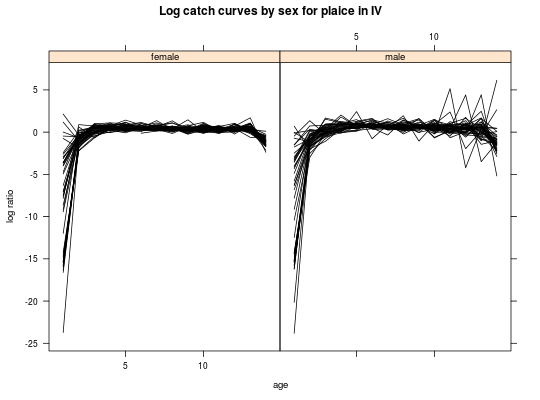

This class encapsulates results of a log ratio at age per cohort method.
Objects of this classe should be created with a call to the contructor function logcc(object, ...), where object must be an object of class "FLQuant" and ... can be used to pass trim arguments to the creator funtion.
"FLCohort"."character".Class "FLCohort", directly.
Inherits from "FLCohort".
Considering \(C_{ay}\), the catch in numbers at age \(a=1,\dots,A\) per year \(y=1,\dots,Y\), obtained e.g. from the catch.n slot of a "FLStock", the computation of logr \(L_{ay}\) is:
$$L_{ay}=log{\frac{C_{ay}}{C_{a+1,y+1}}}$$
FLQuant-class, trim, FLCohort-class
data(ple4sex) # compute logcc ple4sex.cc <- logcc(ple4sex@catch.n) # fine tune plot ttl <- list(label="Log catch curves by sex for plaice in IV", cex=1) yttl <- list(label="log ratio", cex=0.8) xttl <- list(cex=0.8) stripttl <- list(cex=0.8) ax <- list(cex=0.7) # plot ccplot(data~age|unit, data=ple4sex.cc, type="l", main=ttl, ylab=yttl, xlab=xttl, scales=ax, par.strip.text=stripttl, col=1)